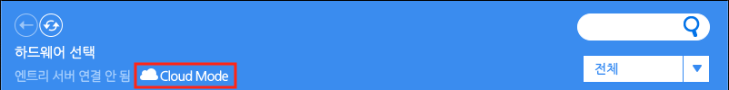

하드웨어 블록
엔트리에 하드웨어를 연결하는 방법은 하드웨어에 따라 다르고, 각 하드웨어마다 사용할 수 있는 블록이 달라요.
이 튜토리얼에서는 하드웨어 연결 프로그램을 설치하는 방법을 알려드릴게요.
하드웨어 연결 프로그램 설치
① 온라인 엔트리
하드웨어 블록 꾸러미에는 하드웨어 연결을 위한 다양한 메뉴가 있습니다. 연결에 성공하면 사용할 수 있는 블록이 나타날 거예요.
‘연결 프로그램 다운로드’ 글씨를 클릭해서 하드웨어 연결에 필요한 (운영체제에 맞는) 프로그램 설치 파일을 다운로드합니다.
- ‘연결 안내 다운로드’ 글씨를 클릭하면 하드웨어 연결 방법에 대한 자세한 설명 파일을 다운로드할 수 있습니다.
- ‘엔트리 아두이노 소스’ 글씨를 클릭하면 엔트리로 아두이노에 명령할 수 있도록 아두이노에 업로드하기 위한 ino 형식(확장자)의 파일을 받을 수 있습니다.

다운로드한 연결 프로그램을 설치했다면, 생성한 실행 아이콘을 더블 클릭하거나 위와 같이 ‘연결 프로그램 열기’ 버튼을 클릭해서 프로그램을 실행해요.
② 오프라인 엔트리
오프라인 엔트리는 하드웨어 연결 프로그램을 기본으로 가지고 있는 덕분에 따로 프로그램을 설치하지 않아요.
바로 ‘연결 프로그램 열기’ 버튼을 클릭하면 하드웨어 연결 창을 열 수 있습니다.
연결할 하드웨어 찾기

하드웨어 연결 프로그램 창입니다.
연결하려는 하드웨어를 찾아서 클릭하면 연결 화면이 나타나요.

클라우드 PC 연결을 시도한다면 위에 ‘클라우드 모드’ 표시가 나타납니다.

오른쪽 위의 검색창을 통해 원하는 하드웨어의 이름을 검색할 수 있어요.
검색창 아래의 목록 상자에서 카테고리를 선택하면 원하는 하드웨어를 더 쉽게 찾을 수 있습니다.
실행하고자 하는 하드웨어 모양을 클릭하고 관련 펌웨어를 설치하면, 엔트리에서 사용할 수 있는 하드웨어 블록들이 나타납니다.
하드웨어 블록들을 이용하면 우리의 실생활과 더욱 가까운 작품을 만들 수 있겠네요!